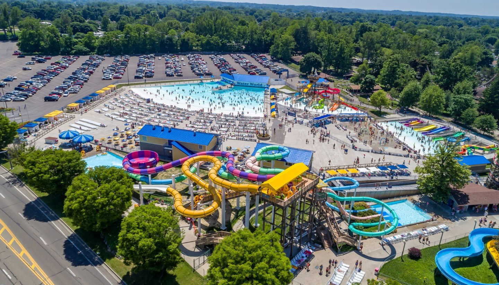
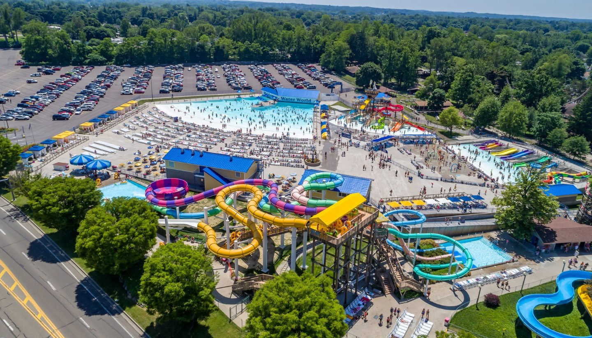

| Attraction |
Description |
Locations |
| Presque Isle State Park |
Presque Isle State Park is a picturesque peninsula that extends into Lake Erie, located in Erie, Pennsylvania. Known for its stunning natural beauty and diverse recreational opportunities, the park is a popular destination for both locals and tourists |
301 Peninsula Dr, Erie, PA 16505 |
| Splash Lagoon |
Splash Lagoon Indoor Water Park Resort is a premier family-friendly attraction located in Erie, Pennsylvania. Known for its year-round tropical environment, this indoor water park offers a wide array of fun and exciting water-based activities suitable for all ages |
8091 Peach St, Erie, PA 16509 |
| UPMC Park |
UPMC Park, located in Erie, Pennsylvania, is a modern and vibrant baseball stadium that serves as the home of the Erie SeaWolves, the Double-A affiliate of the Detroit Tigers. This state-of-the-art facility provides an exciting and family-friendly environment for baseball fans and visitors. |
831 French St, Erie, PA 16501 |
| Waldameer & Water World |
Waldameer & Water World is a beloved amusement park and water park located in Erie, Pennsylvania. With a rich history and a wide array of attractions, it offers a fun-filled destination for families and thrill-seekers alike. |
220 Peninsula Dr, Erie, PA 16505 |
| Erie Zoo |
The Erie Zoo, located in Erie, Pennsylvania, is a charming and educational destination that offers visitors the opportunity to experience wildlife from around the world. This family-friendly zoo provides a delightful mix of animal exhibits, interactive experiences, and beautiful botanical gardens. |
423 W 38th St, Erie, PA 16508 |
| Tom Ridge Environmental Center |
The Tom Ridge Environmental Center is an educational facility that is located on the grounds of Presque Isle State Park in Erie, Pennsylvania in the United States |
301 Peninsula Dr, Erie, PA 16505 |
| Presque Isle Downs & Casino |
Presque Isle Downs & Casino is a premier entertainment destination located in Erie, Pennsylvania. Combining the thrill of live horse racing with a vibrant casino experience, it offers a wide range of activities and amenities for visitors seeking excitement and leisure. |
8199 Perry Hwy, Erie, PA 16509 |

 
